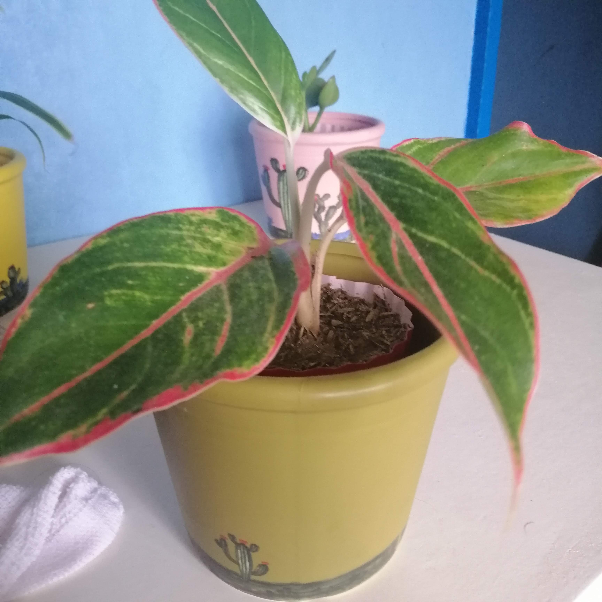

Juan Dela Cruz
UX Designer
Nag-anyaya ng pagpapacain nang isáng hapunan, ng magtátapos ang Octubre, si Guinoong Santiago de los Santos, na lalong nakikilala ng bayan sa pamagát na Capitang Tiago
UX Designer
Nag-anyaya ng pagpapacain nang isáng hapunan, ng magtátapos ang Octubre, si Guinoong Santiago de los Santos, na lalong nakikilala ng bayan sa pamagát na Capitang Tiago